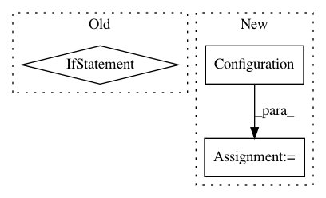

cf6d258c003a5a5b5073830e73e4580aeaf71d45,examples/openai_gym.py,,main,#,37
Before Change
agent_config = Configuration.from_json(args.agent_config)
else:
raise TensorForceError("No agent configuration provided.")
if not args.network_config:
raise TensorForceError("No network configuration provided.")
agent_config.default(dict(states=environment.states, actions=environment.actions, network=from_json(args.network_config)))
logger = logging.getLogger(__name__)
logger.setLevel(log_levels[agent_config["loglevel"]])
After Change
if args.agent_config:
agent_config = Configuration.from_json(args.agent_config)
else:
agent_config = Configuration()
logger.info("No agent configuration provided.")
if args.network_config:
network = from_json(args.network_config)
else:
In pattern: SUPERPATTERN
Frequency: 3
Non-data size: 3
Instances
Project Name: reinforceio/tensorforce
Commit Name: cf6d258c003a5a5b5073830e73e4580aeaf71d45
Time: 2017-06-24
Author: aok25@cl.cam.ac.uk
File Name: examples/openai_gym.py
Class Name:
Method Name: main
Project Name: automl/auto-sklearn
Commit Name: 4c6bef01dc6d8b532dc230fb9bd1c51731dea907
Time: 2020-12-17
Author: 44504424+franchuterivera@users.noreply.github.com
File Name: autosklearn/metalearning/metalearning/kNearestDatasets/kND.py
Class Name: KNearestDatasets
Method Name: __init__
Project Name: automl/auto-sklearn
Commit Name: d39f63e2ded8464e6168d77495816e0fd3ecb885
Time: 2016-07-13
Author: feurerm@informatik.uni-freiburg.de
File Name: autosklearn/pipeline/base.py
Class Name: BasePipeline
Method Name: set_hyperparameters